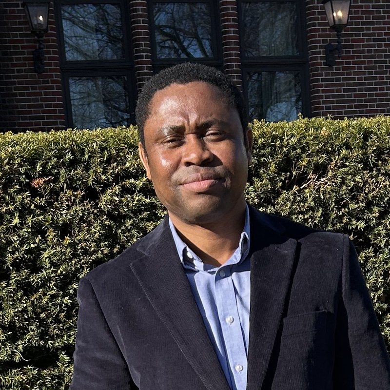

Chibuzo Ukegbu, Ph.D.
Assistant Professor ·
Dian & Diercks School of Advanced Computing
Milwaukee School of Engineering · Diercks Hall 435
I am an Assistant Professor at the Milwaukee School of Engineering, where I teach across the computing curriculum and advise students working at the intersection of software engineering and security. I earned my Ph.D. from Boise State University, with prior degrees from the National Open University of Nigeria, Nnamdi Azikiwe University, and Akanu Ibiam Federal Polytechnic.
My research focuses on the security of industrial control systems, offensive cybersecurity, the safety of children's digital devices, and the practice of cybersecurity education. I am interested in how we train the next generation of defenders and in building tools that help non-experts reason about real-world risk.
Research
My work sits at the intersection of cybersecurity and the systems that quietly run modern infrastructure — factories, utilities, and the connected devices in our homes and classrooms. I am currently active in the following areas:
- Industrial Control Systems (ICS) Security. Threat modeling, vulnerability discovery, and defensive engineering for the software and protocols that operate physical infrastructure.
- Offensive Cybersecurity. Penetration testing methodology, exploit development, and red-team techniques as a basis for principled defense.
- Securing Children's Digital Devices. Studying the privacy and safety properties of devices marketed to minors and designing safer defaults for families.
- Cybersecurity Education. Curriculum, assessment, and lab design for undergraduate security education.
- Software Engineering & AI Security. Secure software development practice, and the security implications of AI systems in the software supply chain.
A complete and up-to-date list of publications is available on Google Scholar.
Teaching
I teach foundational and advanced courses in programming, systems, and security in the Dian & Diercks School of Advanced Computing. Recent and current courses include:
- Introduction to Programming using Java
- Data Structures and Algorithms using Java
- Database Systems
- C and C++ Programming
- Assembly Language
- Computer Architecture
- Applied Penetration Testing
- Digital Forensics
MSOE students: please use the course management system for syllabi, schedules, and assignments. For office hours and meetings, see Contact.
News
- May 2026 — Launched this site.
- [News] —
- [News] —
Contact
The best way to reach me is by email: ukegbu@msoe.edu. Prospective MSOE students interested in research should include a brief description of their background and what they would like to work on.
Diercks Hall 435Milwaukee School of Engineering
1025 N Broadway, Milwaukee, WI 53202